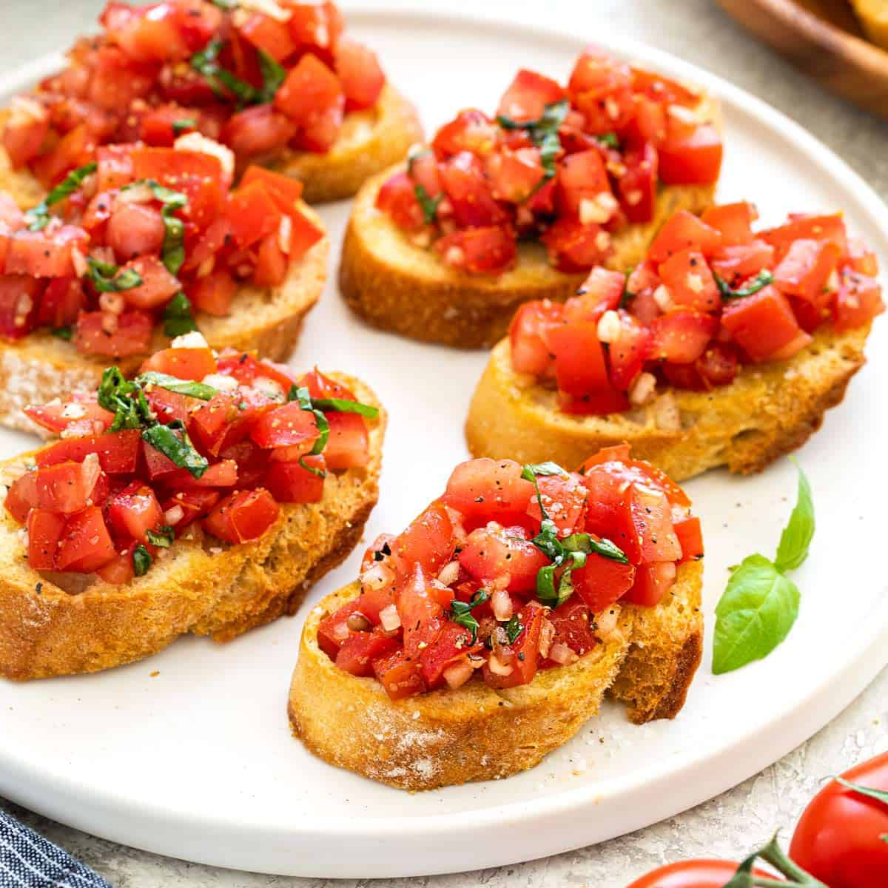

🍅 Bruschetta
🧂 Ingredientes
- 4 rebanadas de pan rústico
- 2 tomates maduros
- 1 diente de ajo
- Albahaca fresca
- Aceite de oliva
- Sal y pimienta al gusto
👨🍳 Preparación
- Tuesta ligeramente las rebanadas de pan.
- Frota el ajo sobre el pan caliente.
- Pica los tomates y mézclalos con albahaca, sal, pimienta y aceite.
- Coloca la mezcla sobre el pan y sirve inmediatamente.